🍇 Multi-Trait Spectral Modeling of Grapevine Leaf Traits and Nutrients
Parastoo Farajpoor, Alireza Pourreza*, Mohammadreza Narimani, Ashraf El-Kereamy, and Matthew W. Fidelibus
Plant Phenomics · Volume 7 · Article 100142 · 2025 · Open access CC BY
Digital Agriculture Laboratory · University of California, Davis · University of California, Riverside
From Leaf Spectra to Vineyard Traits
Accurate, non-destructive estimation of grapevine leaf traits underpins precision viticulture—from nitrogen management to canopy biochemistry screening. Hyperspectral leaf reflectance can encode chlorophyll, water, and nutrient status, but single-trait models often ignore shared spectral structure across correlated biochemical targets.
For searches on grapevine hyperspectral nutrients, CNN-LSTM leaf traits, PROSPECT-PRO correction, or Plant Phenomics grapevine, this page summarizes research coauthored by Mohammadreza Narimani at the University of California, Davis with Parastoo Farajpoor, Alireza Pourreza, Ashraf El-Kereamy, and Matthew W. Fidelibus. The multi-trait spectral framework couples deep sequence modeling with physically informed PROSPECT-PRO correction to improve nutrient and biochemical trait estimates from leaf spectra.
Hemispherical leaf reflectance encodes biochemistry and mineral nutrition. If those signals can be inverted reliably, growers gain a path to denser, less destructive vineyard monitoring. This Plant Phenomics study collects hyperspectral data from about 1,000 grapevine leaves across three seasons (400–2500 nm) and compares single-trait versus multi-trait deep models.
Missing structural and pigment labels were imputed with PROSPECT-PRO in inverse mode, with a chlorophyll bias correction. Spectra were reduced from 2,101 bands to 204 correlated-band groups. Both model families use a hybrid CNN–LSTM; the multi-trait network predicts all 16 traits at once and weights measured versus imputed samples during training.
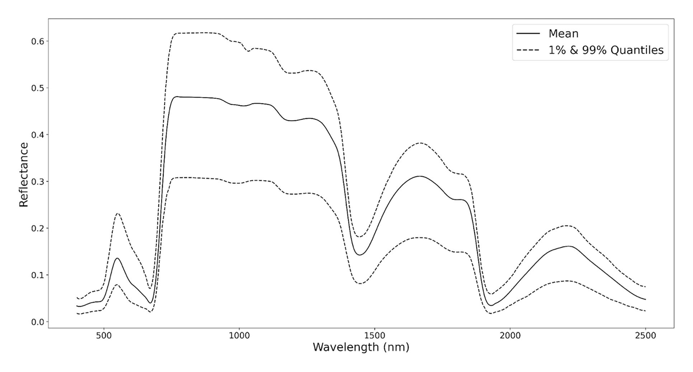
PROSPECT Correction and Multi-Trait Gains
Physically based models such as PROSPECT-PRO constrain how pigments, water, and dry matter shape leaf reflectance. Coupling that prior with a CNN-LSTM multi-trait learner helps reduce error propagation when several nutrients and biochemical traits are estimated together—exactly the setting of vineyard decision support where nitrogen, phosphorus, and related indicators co-vary.
The figures that follow show experimental design, spectral behavior, and multi-trait performance. Please cite the Plant Phenomics article when you reuse methods or numbers; this research card is an SEO-friendly overview for Mohammadreza Narimani’s UC Davis digital viticulture collaborations, not a substitute for the paper.
Inverse PROSPECT-PRO chlorophyll was systematically high. A slope-based correction (scale 0.75 on the comparable subset) aligned distributions with wet-lab chlorophyll before those labels entered the trait models.
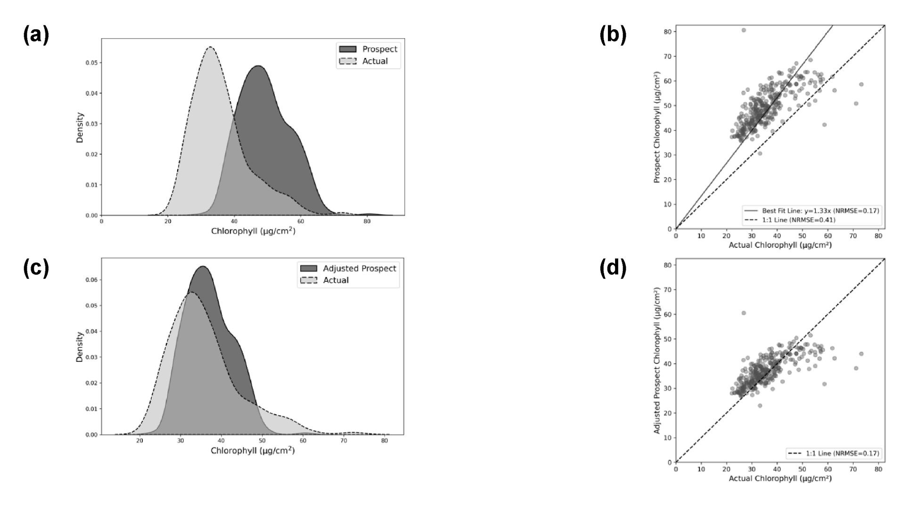
Wavelength importance, trait–trait correlation, and PCA of the merged spectra explain why a shared backbone helps: nutrients and pigments reuse overlapping bands, while phenology still separates in PC space.
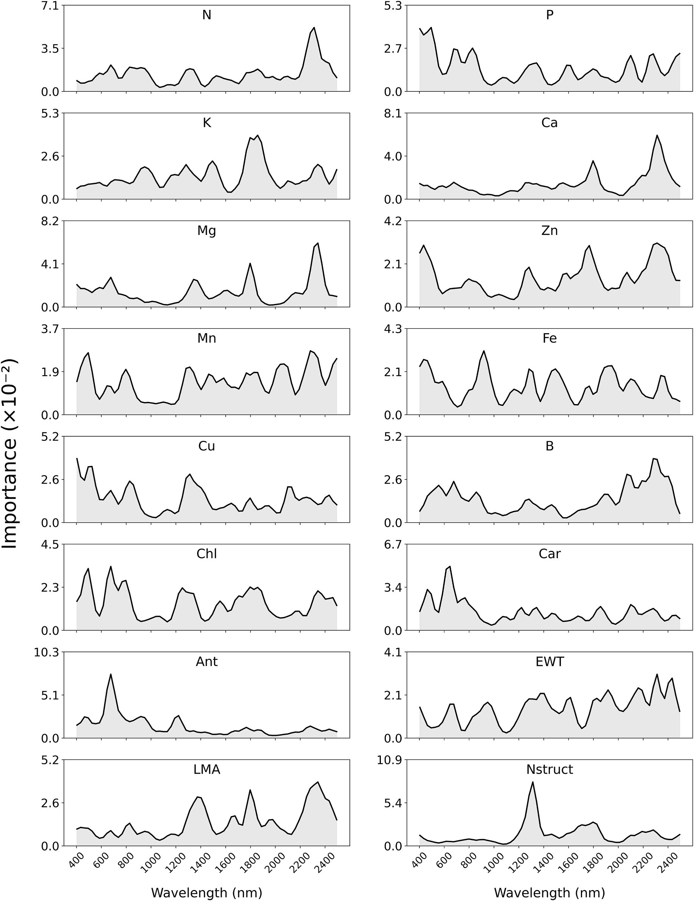
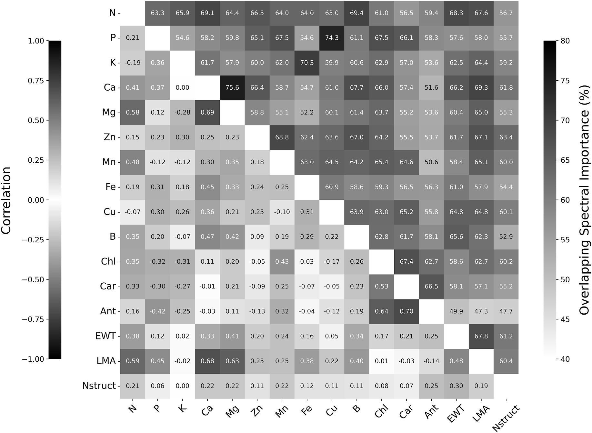
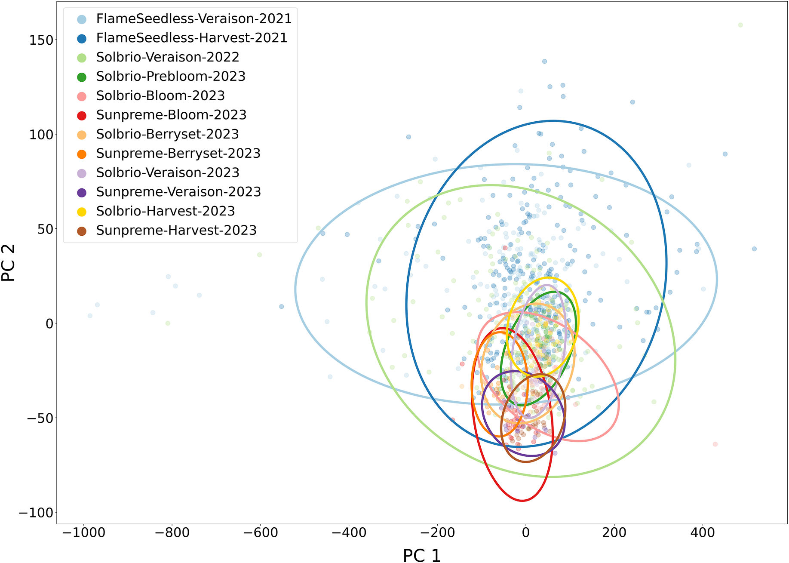
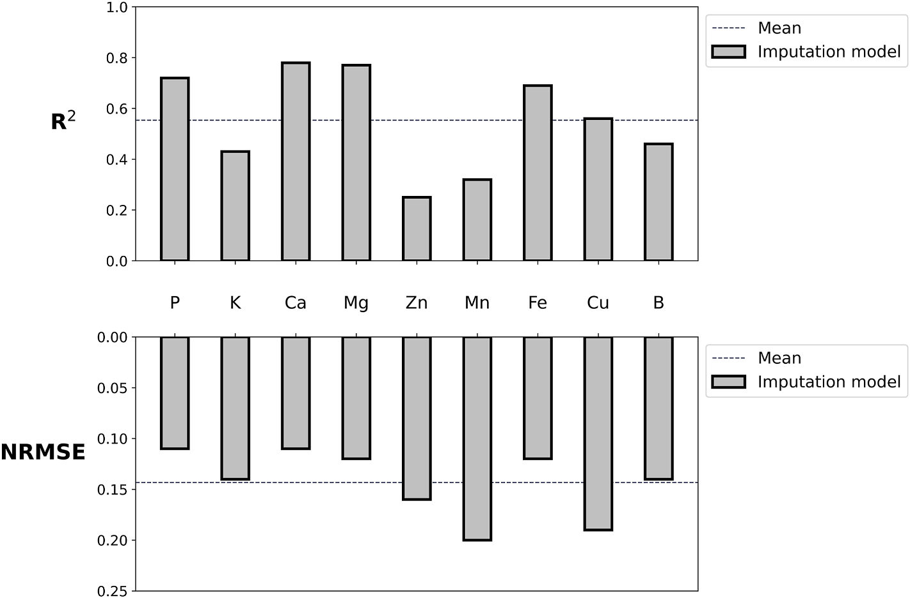
The multi-trait CNN–LSTM outperformed separately trained single-trait networks on most nutrients and pigments. Headline lifts versus single-trait models include nitrogen R² 0.42 vs 0.26, phosphorus 0.81 vs 0.64, Nstruct 0.90 vs 0.25, and manganese 0.62 vs 0.30, with lower NRMSE and higher RPD.
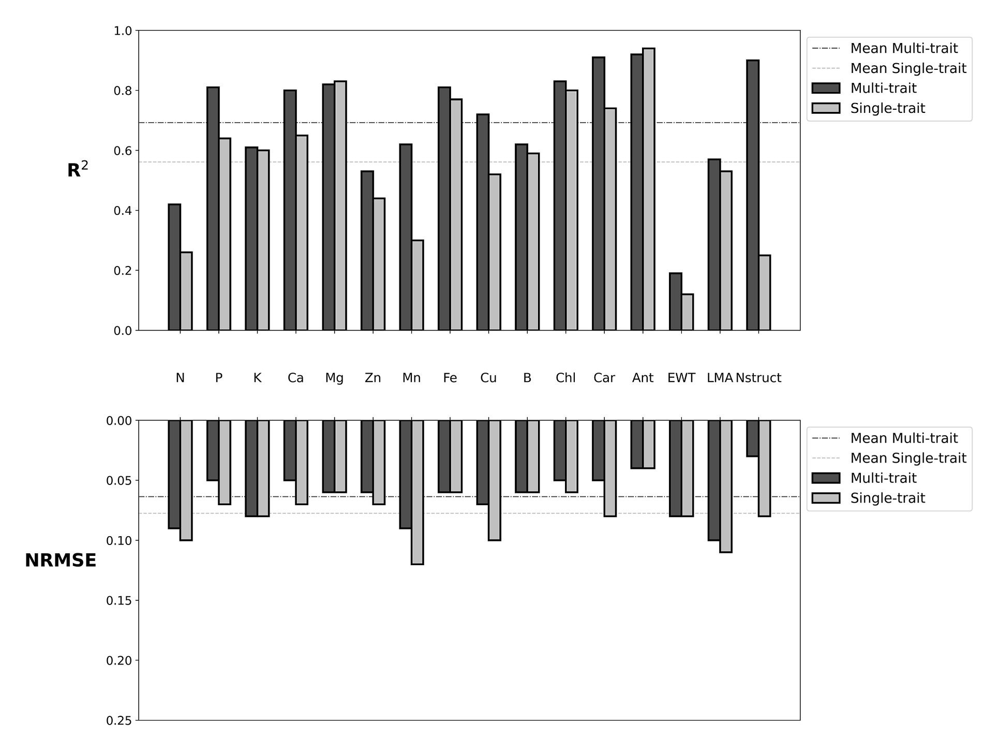
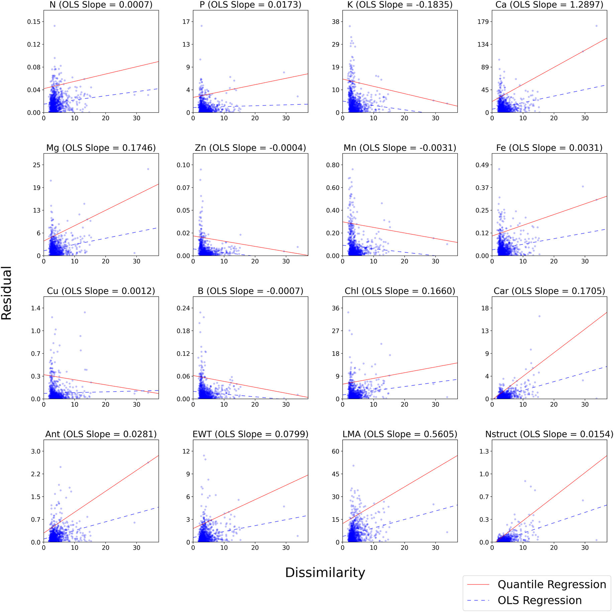
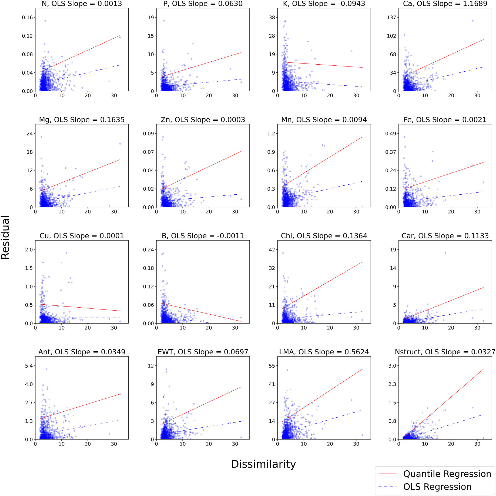
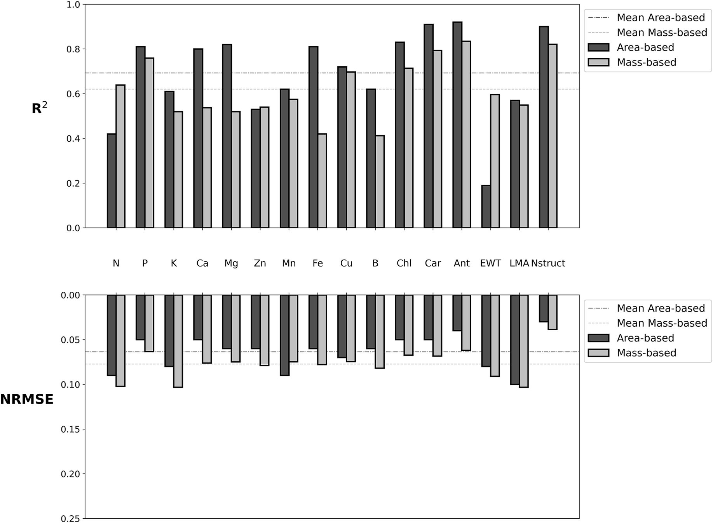
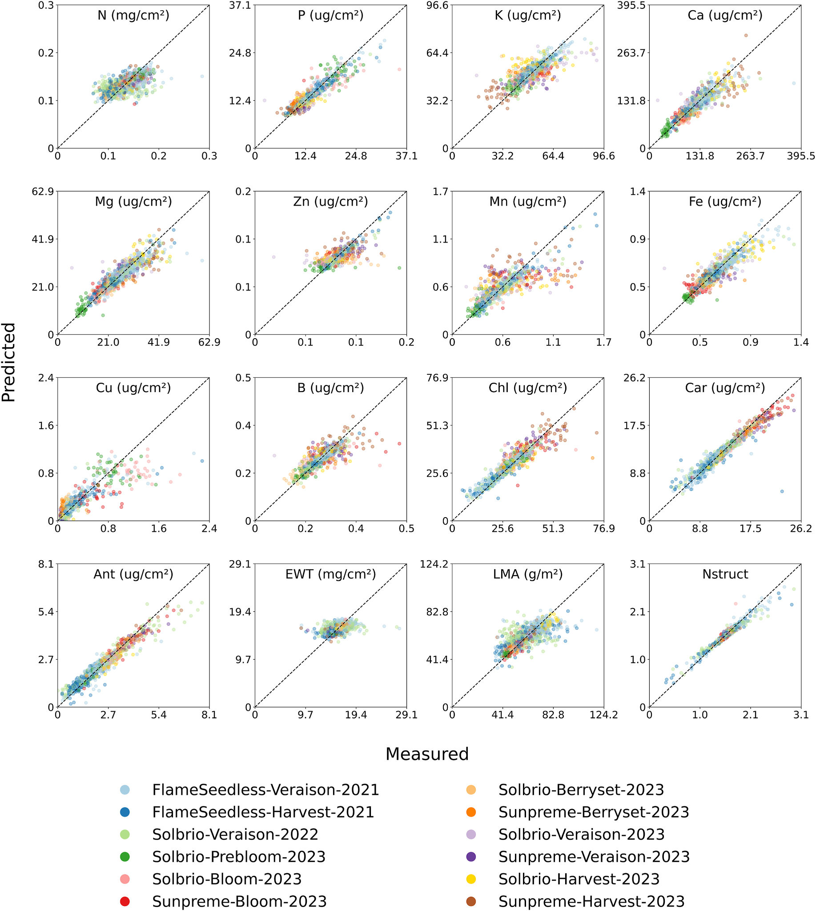
Shared spectra
One backbone sees every band group, so pigments, water, and nutrients regularize each other.
Imputation weights
Fully measured leaves count more than PROSPECT-filled labels during training.
Viticulture use
A practical route from handheld or lab spectra toward multi-nutrient vineyard diagnostics.
Paper and Citation
Farajpoor, P., Pourreza, A., Narimani, M., El-Kereamy, A., & Fidelibus, M. W. (2025). Multi-trait spectral modeling for estimating grapevine leaf traits and nutrients. Plant Phenomics, 7, 100142.
DOI: 10.1016/j.plaphe.2025.100142 · Open access under CC BY 4.0
Please cite the publisher version when you use this work. The summary on this page is a research card, not a substitute for the article.
Contact
Mohammadreza Narimani
PhD Candidate, University of California, Davis